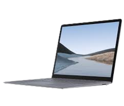

Ponad 70 lat temu powstały pierwsze komputery na uniwersytecie w Pensylwani. Przez wiele kolejnych lat komputery oczywiście coraz bardziej rozwijano, aż udało się dotrzeć do ery komputerów domowych.
Pierwsze komputery, które mogły być dostępne dla zwykłych użytkowników powstały w latach 80, czyli niemal 40 lat po powstaniu ENIACA. Bardzo szybko ogólnie dostępne komputery PC dorobiły się też pierwszego systemu operacyjnego w postaci Windowsa 1.0, w którym wykorzystano już interfejs graficzny. Tamten Windows to nakładka na MS-DOS. Jego powstanie jest obecnie umownie uważane za faktyczny początek ery desktopów, które mogły być wygodnie wykorzystywane w warunkach domowych. Takie komputery nie zajmowały już bowiem tak wiele miejsca, można je było wygodnie umieścić na biurku. Ich ceny także nie były zbyt wysokie. Jako dobry przykład można podać kultowy już dziś komputer Commodore 64, za który w dniu premiery trzeba było zapłacić 595 dolarów, cały czas jak na tamte czasy sporo, ale na pewno nie była to już cena zaporowa.
Era komputerów desktopowych, czyli komputerów stacjonarnych trwała aż do końca lat 90. Przez ten czas producenci komputerów prześcigali się w ich ulepszaniu i w dodawaniu do nich bardziej wydajnych podzespołów, co też skutkowało coraz szybszym starzeniem się takiego sprzętu. Potem pomału zaczęły je zastępować jeszcze bardziej praktyczne i dające nieporównywalnie więcej możliwości komputery przenośne, czyli laptopy. Choć oczywiście obecnie komputery stacjonarne także są bardzo często wykorzystywane do różnych celów.
O laptopach
Pod koniec lat 90 laptopom udało się zdobyć dosyć dużą część rynku komputerowego. Ze względu na swoje ograniczenia wydajnościowe oraz dużo wyższe ceny nie były tak chętnie kupowane przez klientów. Pierwszy laptop pojawił się jeszcze pod koniec lat 70 czyli jeszcze przed powszechnym udostępnieniem desktop.
W latach 90. nastąpił jednak szybki rozwój laptopów. Na początku szybko zwiększała się ich moc. Później czołowi producenci, pracowali także nad zmniejszeniem ich rozmiarów i ciężaru. Obecnie laptopy są już dostępne w wielu wariantach. Klienci najczęściej wybierają te które mają niewielkie wymiary imały ciężar(ultrabooki, notebooki)